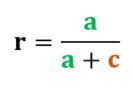

Standardmaß "Recall"
Die Fähigkeit eines Systems, relevante Dokumente zu liefern, wird als recall bezeichnet (wie viele der relevanten Dokumente sind gefunden?). Recall steht für das Verhältnis der relevanten Dokumente, die das System ermittelt hat (a) zu allen relevanten Dokumenten einer Dokumentmenge (a + c). Als Formel ausgedrückt bedeutet das:

Wichtig für den Recall
Bei der Berechnung des recall ist der Elementarparameter c in der Regel unbekannt und muss geschätzt werden (z. B. mit der Pooling-Methode).
Bei sehr großen Ergebnismengen ist es nicht immer möglich, a genau zu bestimmen, da nicht alle Dokumente gesichtet werden können. Daher wird die Ergebnismenge häufig 'abgeschnitten' (cut off).
Wertebereich: 0 bis 1; ein guter Wert ist 1, ein schlechter Wert ist 0.
Idealerweise sollte das System alle relevanten Dokumente finden. Dieses Ziel ist allerdings unrealistisch. Ein guter Wert für ein System liegt bei 60 %.
Recall alleine berücksichtigt den Ballast nicht, den die Antwortmenge enthält. Deshalb muss der Precision-Wert miteinbezogen werden. Zu diesem Zweck versucht man, die beiden Maße zu koordinieren.
Bei Ranking-Systemen sagt recall nichts darüber aus, wie gut das System die Dokumente sortiert hat.